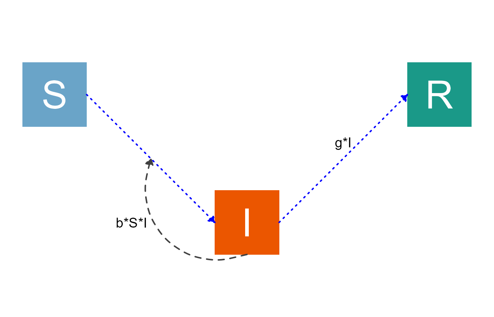

Introduction
We assume you went through the getting started vignette and also the basic modification and the input structure modification vignettes. These ways of adjusting diagrams described in the previous vignettes might allow you to produce the diagram you need. That’s great! But sometimes, you might want to make additional tweaks. How that’s done is the topic of this vignette.
Modifying the ggplot2 code
The most flexible approach to adjust diagrams is to modify the ggplot code that produces the diagram. To do this, you can retrieve the full ggplot2 code that creates the diagram and then edit it like you would any ggplot figure. This is the most flexible, but also the most time-consuming approach. We’ll illustrate this approach with a few simple examples. It is obviously impossible to cover all options, it’s fully up to you to edit the code.
Example 1
We’ll start with a very basic example. First, you define your model as usual.
varlabels = c("S","I","R")
flows = list(S_flows = c("-b*S*I"),
I_flows = c("b*S*I","-g*I"),
R_flows = c("g*I"))
sirmodel1 = list(varlabels = varlabels, flows = flows)Once you have your model, you can send it to write_diagram, a function that writes the full code needed to generate the diagram. You can specify the location and name for the file. If you don’t provide those, it will be stored in the current working directory under the name diagram_code.R.
write_diagram(model_list = sirmodel1, filename = 'sirmodel1_diagram_code.R', always_overwrite = TRUE)If things worked well, you should get a message telling you the location where the code was saved. The code that is generated is completely self-contained, that means you can give it to anyone, who can run it and reproduce your model figure.
If you run the code that is generated, it will create the diagram structure as an object called diagram_plot. You can then plot or save that object (there is code at the bottom of the generated file for that).
For this example, here is what you get.
Having all the code that generates the figure also allows you to do some fine-tuning. We provided hopefully enough comments in the code to make it clear what happens where. That said, to be able to tweak the diagram this way requires being familiar with creating figures in ggplot.
Let’s assume for this example that you want to add some text below the I compartment. In this case, you don’t need to modify any of the existing code, just add a some code at the end. The following lines of code appended to the bottom of sirmodel1_diagram_code.R, just before the final plot statement, will do the trick:
#######################
### LAST PART OF THE GENERATED CODE BEFORE ADDITION
#######################
if(with_grid == FALSE) {
diagram_plot <- diagram_plot +
theme_void()
} else {
# The else here may seem silly, but otherwise the returned plot is NULL
diagram_plot <- diagram_plot
}
#######################
### YOUR NEW ADDITION
#######################
# make a new data frame of text
text_df <- data.frame( x = 3, y = -1,
lab = "Infected and Infectious"
)
diagram_plot <- diagram_plot +
geom_text(data = text_df, aes(x = x, y = y, label = lab), size = 8)
#######################
### PART OF THE GENERATED CODE AFTER ADDITION
#######################
# These lines plot or save the generated diagram.
# Uncomment them if you want to perform either action.
# plot(diagram_plot)
# ggsave('diagram_plot.png',diagram_plot)Then save the new code, let’s call it sirmodel1_diagram_code_modified.R. Running the new code will add the wanted text to the diagram plot
Example 2
It is possible, and advisable, to first do modifications using the previously explained approaches. Those can be combined with this approach for editing the code. To that end, you can supply the write_diagram function all settings that you can send to make_diagram, and you can also supply your own modification of the diagram_list object. In the latter case, providing the model as input to write_diagram is not needed. You can still do so, the diagram will be stored inside the R code, but it will not be processed, instead your supplied diagram_list will be used.
Here is a full example showing how to use the different customization options for the SIR model.
Specify the model, including locations and variable names.
varlabels = c("S","I","R")
flows = list(S_flows = c("-b*S*I"),
I_flows = c("+b*S*I","-g*I"),
R_flows = c("+g*I"))
varnames = c("Susceptible","Infected","Recovered")
varlocations = matrix(data = c("S", "", "R",
"", "I", "" ),nrow = 2, ncol = 3, byrow = TRUE)
sirmodel2 = list(varlabels = varlabels, flows = flows)
sirsettings2 = list(varnames = varnames, varlocations = varlocations)Make and modify the diagram_list object by flipping the bSI interaction arrow to go below the S \(\rightarrow\) I arrow. (There’s no good reason to do that, other than to show an example.)
diagram_list = prepare_diagram(sirmodel2, sirsettings2)
diagram_list$flows$ystart[3] = -2.5
diagram_list$flows$yend[3] = -1
diagram_list$flows$labelx[3] = 1.2
diagram_list$flows$labely[3] = -2
diagram_list$flows$curvature[3] = -0.7Create the diagram the usual way using make_diagram, while also supplying additional settings.
#specify the settings separately so we can re-use them below
diagram_settings = list(var_fill_color = c("#6aa4c8", "#eb5600", "#1a9988"),
var_label_size = 14,
main_flow_color = "blue",
main_flow_linetype = "dotted")
sir2_diagram <- make_diagram(diagram_list, diagram_settings)
plot(sir2_diagram)
Alternatively, you can generate the full code that produces this plot as follows
write_diagram(model_list = sirmodel2,
model_settings = sirsettings2,
diagram_list = diagram_list,
diagram_settings = diagram_settings,
filename = 'sirmodel2_diagram_code.R')If you run the code that is generated, you should see a figure like this
All of this you can get by using the previous methods of modification we explained.
Let’s assume that you are mostly happy with this figure, but you want to make another tweak. This time, you want to (for some reason) turn the shape of the I box into a circle.
Here is how you modify the sirmodel2_diagram_code.R code to achieve this.
Doing a circle for I is hard to do in the current vectorized way the code is written. I still think loops might be easier to manipulate.
#######################
### LAST PART OF THE GENERATED CODE BEFORE ADDITION
#######################
#to come
#######################
### YOUR NEW ADDITION
#######################
#to come
#######################
### PART OF THE GENERATED CODE AFTER ADDITION
#######################
#to comeNow save the modified script (here We call it sirmodel2_diagram_code_modified.R), source it and plot the generated diagram_plot object to get this figure:
Example 3
Let’s look at one more example. We’ll use the predator-prey model again.
# specify the model
varlabels = c("B","I")
flows = list(B_flows = c("+g*B*(1-B/bmax)", "-dB*B", "-k*B*I"),
I_flows = c("+r*B*I", "-dI*I"))
ppmodel = list(varlabels = varlabels, flows = flows)We won’t do any changes to the diagram_list structure here, but we’ll send a few custom make_diagram settings to the write_diagram code.
Here is first the plot using the prepare_diagram and make_diagram` functions. It produces as customized (somewhat ugly) diagram.
diagram_list = prepare_diagram(ppmodel)
diagram_settings = list(
var_outline_color = "red",
var_fill_color = c("#6aa4c8", "green"),
var_label_color = "red",
var_label_size = 10,
main_flow_label_size = 4,
interaction_flow_size = 2,
main_flow_color = "green",
main_flow_linetype = 3)
pp_diagram <- make_diagram(diagram_list, diagram_settings)
plot(pp_diagram)
Now let’s generate the code for this figure.
# make diagram with adjusted settings
write_diagram(model_list = ppmodel,
diagram_settings = diagram_settings,
filename = 'ppmodel_diagram_code.R'
)Running the resulting code produces this diagram.
Let’s say that for some reason, you want the rectangles with rounded corners. I didn’t know how to do that, but a quick online search provided this solution. Note that this is somewhat advanced and hacky, but I figured I show it as an example to illustrate that at this point, you can do anything you like with the code to make whatever you want.
It’s actually not much code editing. First, you need to install the statebins R package. The version on CRAN works fine, so you can just use install.packages('statebins'). Then add library('statebins') at the top of your code file, underneath the other library() commands. Finally, find the geom_rect bit in your code (close to the top) and replace it with statebins:::geom_rrect (yes, you need the ::: in there since geom_rrect is not an exported function. If you have no idea what that means, that’s ok.) Everything else you can keep unchanged. Save your code (I recommend using a different name so you don’t accidentally overwrite it if you run your write_diagram code again). Now, if you run the code, it should produce this diagram.
General suggestions
I think with those examples, you get the idea. At this point, the options are endless and you can change the code to get exactly what you want - at the expense of having to write/edit code yourself.
In general, we recommend implementing the easiest modifications first, even if you know you’ll be editing the ggplot code at the end. Thus, first use the options described in the basic modification vignette. Then make further adjustments by editing the diagram_list structure as described in the input structure modification vignette. Once you have gotten as far as you can with these approaches, and still want to make further edits, write the ggplot code to a file and change the code.
Of course, once you have started manual editing of the code, things are not reversible, i.e. you have basically left the flowdiagramr package infrastructure and are now adjusting the diagram on your own. You can of course always re-generate the code and copy your modifications over (as long as you remember to not overwrite your code.)
Next steps
This concludes the main tutorials for the package. If you happen to be a user of our modelbuilder package, there is another short vignette explaining how the two connect.. There is also a vignette that explains how you can use flowdiagramr to create flow diagrams that are not based on compartmental models. Basically, anything for which you want to make a diagram consisting of nodes/boxes and flows/arrows can be created with flowdiagramr. This vignette gives some examples. Another vignette provides some more model examples, and another one compares flowdiagramr to other R packages.